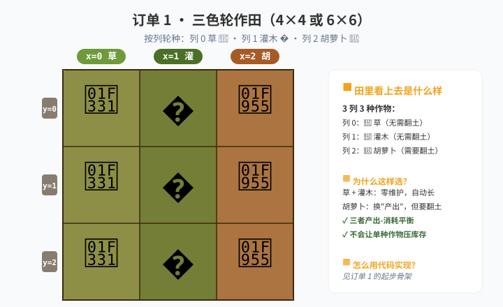

🎮 游戏进度 · 这一关解锁什么
📌 课前在游戏里做这些事
- 解锁 南瓜（Pumpkin）——需要先把所有格子种满，成熟后会自动聚合成巨大南瓜。
- 试试只种 1 种南瓜，看产量；再试试种树，比较两种的维护成本（树不能相邻）。
- 记住：
Entities.Grass（草）是默认地块，通常不需要种，收获后自然恢复。
📖 知识卡 · 5 张
① if：先会判断，才能挑东西
列表要用下标取元素，但下标是算出来的——算出来的东西要先判断合不合理，再去取。这就是 if 的用处：先确认，再行动。
crops = [Entities.Grass, Entities.Tree, Entities.Carrot]
i = 1
if i < len(crops): # 1 小于 3，可以取
plant(crops[i]) # 安全地取第 2 个
else:
pass # i 太大了，什么都不做没有这层 if，下标算错就直接报 IndexError 停机。加上它，算错了也只是跳过这一格，不会崩。
② 列表：用 [] 装一组数据
列表就像一组编号的小格子，按下标（从 0 开始）取东西。
crops = [Entities.Grass, Entities.Tree, Entities.Carrot]
petals = [5, 8, 3, 12, 7]
empty = [] # 空列表③ 索引：crops[0] 是第一个
下标从 0 开始，crops[0] 是第一个，crops[1] 是第二个。不要写 crops[1] 当成第二个，错的话报 IndexError。
crops = [Entities.Grass, Entities.Tree, Entities.Carrot]
quick_print(crops[0]) # 第 1 列：草
quick_print(crops[1]) # 第 2 列：树
quick_print(crops[2]) # 第 3 列：胡萝卜
quick_print(crops[3]) # 报错：IndexError: list index out of range④ append / len：往里加、问多长
bad = [] # 空列表：先准备一个"烂格账本"
bad.append([1, 2]) # 记下 (1, 2) 这个烂格
bad.append([3, 0]) # 再记下 (3, 0)
quick_print(len(bad)) # 2，账本上有 2 个烂格
quick_print(bad[0]) # [1, 2]，第一个烂格的坐标⑤ for x in list：遍历列表
这是把"列表学完"的关键用法：遍历就是把列表里每个东西挨个拿出来一次。
for c in [Entities.Grass, Entities.Tree, Entities.Carrot]:
quick_print(c) # 依次打出 3 种作物的 API 名
# 输出三行：Entities.Grass / Entities.Tree / Entities.Carrot这一关的精髓是组合：用 len() 取列表长度，用 % 取余，用 [] 取元素——一行代码替代一堆 if。
🚜 农场订单 · 闯关任务
订单 1
三色轮作田（增删皆宜）
📋 客户要求
在 4×4（解锁 Larger Field 后可调 6×6）的田里按"列"轮种：第 0 列草、第 1 列🌳 树、第 2 列🥕 胡萝卜。草零维护自动长，树要隔格种才不死，胡萝卜需要翻土但产量高——三者产出-消耗平衡。不允许写 3 个 if 判断 x 的值。

必须用列表
必须用 % 取余
必须用 len()
不能写 if x==0 / x==1 / x==2
加成题：把列表改成 5 种作物，看谁的代码只改一行就搞定。
订单 2
烂格记账：列表第一次当账本
📋 客户要求
解锁南瓜（Pumpkin）后，全田种南瓜。南瓜长大时会随机"枯死"，要凑成"巨大南瓜"必须没有烂格。任务：扫一遍全田，把烂格的坐标（x, y）append 进列表，再用 for 循环
for x, y in bad: 解包，走回烂格补种，直到列表清空，最后整片一起收。
必须用 append
必须用列表 [x, y] 存坐标
必须用 for x, y in bad: 解包
必须用 while len(bad) > 0
解包：for x, y in bad: 会把 [2, 1] 拆成 x = 2, y = 1 两个变量——这是 L4 函数的"参数解包"前身，先在这里熟悉手感。
🔧 常见报错 · 卡住了先看这里
IndexError: list index out of range → 下标越界。3 个元素的列表最大下标是 2，写 3 就报错。
只种了第 0 列的作物 → 列表写成了 (...)（元组）而不是 [...]（列表）。游戏里元组不可改。
append 不生效 → 写成 crops = crops.append(x)，这是错的。append 不会返回新列表，它直接改原来的。
为什么 crops[1] 是"树"不是"草" → 下标从 0 开始。0 才是第一个。
🚪 自查门
✓ 5 个知识点 · 真的会了才勾
口述题 · 检验真会了把代码里的列表 + 取余删掉，换成 3 个 if 判断 x 的值——代码会变长还是变短？为什么？这就是"为什么需要列表"的答案。